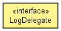

org.hornetq.spi.core.logging
Interface LogDelegate
public interface LogDelegate

I represent operations that are delegated to underlying logging frameworks.
- Author:
- Kenny MacLeod
isInfoEnabled
boolean isInfoEnabled()
isDebugEnabled
boolean isDebugEnabled()
isTraceEnabled
boolean isTraceEnabled()
fatal
void fatal(Object message)
fatal
void fatal(Object message,
Throwable t)
error
void error(Object message)
error
void error(Object message,
Throwable t)
warn
void warn(Object message)
warn
void warn(Object message,
Throwable t)
info
void info(Object message)
info
void info(Object message,
Throwable t)
debug
void debug(Object message)
debug
void debug(Object message,
Throwable t)
trace
void trace(Object message)
trace
void trace(Object message,
Throwable t)
Copyright © 2009 Red Hat Inc. All Rights Reserved.